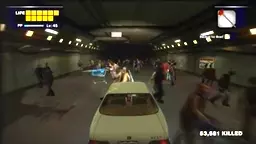
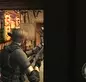
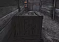
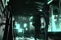
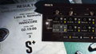
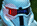

Simple stopwatch for use in DEAD RISING's infinity mode.
We are branching out beyond zombies! From Alien to Zombie, you name it - we kill it. "Look, man. I only need to know one thing: where they are 👉 "

The first Zombie Genocider achievement, obtained March 2007.



Knife v. Tyrant🧟🧟🧟
